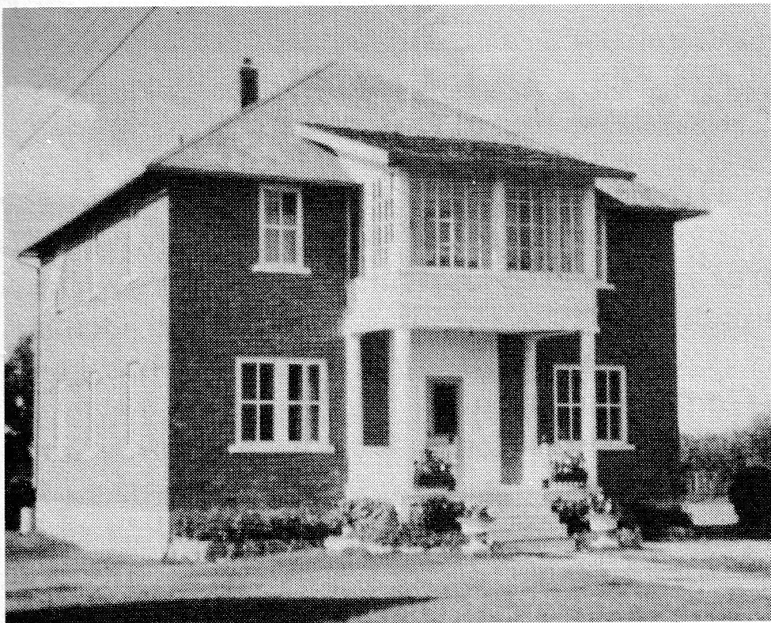

mandrel and other necessary parts were purchased, he built the rest. The mill was set up about a mile and a half from Delmas on the North Saskatchewan River. Henri was joined by a couple of men who also wished to build homes. Together they cut and sawed the black poplar logs.
When Henri's house was finished in 1917 it was a three-storied building, well built and roomy. It held six bedrooms on the second floor with a hall running down the centre. Alma was happy with her new home and was especially pleased when Henri saw to it that closets were built in each of the bedrooms. Downstairs, maple cupboards lined the west wall in the kitchen. This was where the family usually ate except, of course, on Sundays and on special occasions when the dining room was used. French doors opened from here into the living room. A large master bedroom and an office for the man of the house completed the main floor. There was enough space on the third floor for another four rooms but, as their needs were well cared for, this part of the house had not been finished. The floors were hardwood and were kept shining by the girls. A wood furnace with a grate in the centre of the floor heated their large home. The staircase ran up the middle of the house to the top floor and from there to a trap door which allowed you to step outside where you could walk around the roof for an excellent view of Delmas. A three-foot parapet made the little balcony safe. Looking down, you could see the large brick veranda with wooden posts on the front of the house. With the purchase of a thirty-two volt power plant and a gas washing machine, their home was complete and rather modern.

Situated on the edge of town in the northeast corner, their home was a half mile from school. Yet the Alain children were often late and, on these occasions, were scolded by the Sisters. Alma valued the educational opportunities provided for their children as her own schooling had lasted only a few years. However, she had continued to learn through her own efforts and, in time, she mastered reading and writing in both English and French. She looked forward to each of their boys attending the Catholic Boys' College at Gravelbourg. The Priests and the Brothers would be a good influence on her rambunctious and wild-scheming boys. Their rough ways were apparent; they were never able to keep a back on a chair.
Even the boys themselves - now men - admit to their mischief as in the following incidents related by Moise, better known as "Smokey." (Moise had been given this nickname by his Uncle Archie. One of the stories told is that Uncle Archie was so impressed with Moise's speed in running that Uncle said, "The lad ran so fast, he made smoke!")
"Louis and I were always up to something. One Saturday, Dad had to go to a municipal council meeting. As soon as he was gone down the road and turned the corner to Battleford, Louis and I decided we were going to move the shack which was actually the old house. We quickly dragged some eveners, got some twine and came in with eight chickens. All of a sudden Dad was coming back into the yard and asked what we were doing to which we said, 'Nothing', and away he went again.
Mother came out and said, 'You little beggars, quit that. I'm going to tell your Dad when he comes back.'
We told her to go back into the house and do her own work."
Another story related by Smokey is the following:
"Another Saturday, some years later, Dad told Louis and I to go to Section 8 and bring back the two hay racks that were there. When we got there we had to do something. There was an old house but we couldn't move it. Off to the side was a breaking plow which gave us the idea of breaking up the nice yard a bit. We broke the yard up going first in one direction and then in another and so on till we grew tired of that. Then back to what we were supposed to do - bring the hay racks home. Now the racks were facing back to back so we decided to tie them like that and